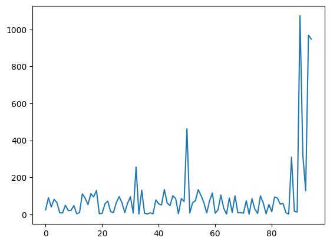
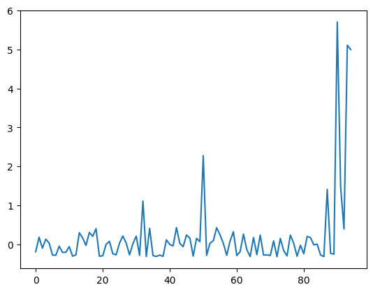
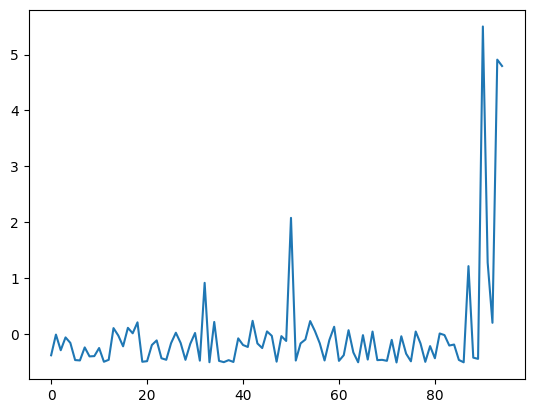
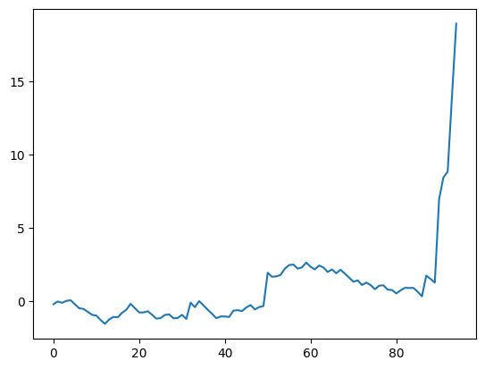
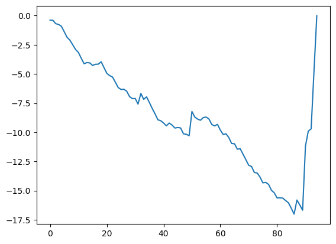

import numpy as np
import pandas as pd
import networkx as nx
import sklearn
# sklearn
from sklearn import model_selection # split함수이용
from sklearn import ensemble # RF
from sklearn import metrics
# embedding
from node2vec import Node2Vec
from node2vec.edges import HadamardEmbedder, AverageEmbedder, WeightedL1Embedder, WeightedL2Embedderdef build_graph_bipartite(df_input, graph_type=nx.Graph()):
df=df_input.copy()
mapping={x:node_id for node_id, x in enumerate(set(df["cc_num"].values.tolist()+\
df["merchant"].values.tolist()))}
df["from"]=df["cc_num"].apply(lambda x:mapping[x]) #엣지의 출발점
df["to"]=df["merchant"].apply(lambda x:mapping[x]) #엣지의 도착점
df = df[['from', 'to', "amt", "is_fraud"]].groupby(['from','to']).agg({"is_fraud":"sum","amt":"sum"}).reset_index()
df["is_fraud"]=df["is_fraud"].apply(lambda x:1 if x>0 else 0)
G=nx.from_edgelist(df[["from","to"]].values, create_using=graph_type)
nx.set_edge_attributes(G,{(int(x["from"]),int(x["to"])):x["is_fraud"] for idx, x in df[["from","to","is_fraud"]].iterrows()}, "label") #엣지 속성 설정,각 속성의 사기 여부부
nx.set_edge_attributes(G,{(int(x["from"]),int(x["to"])):x["amt"] for idx,x in df[["from","to","amt"]].iterrows()}, "weight") # 엣지 속성 설정, 각 엣지의 거래 금액
return G
def build_graph_tripartite(df_input, graph_type=nx.Graph()):
df=df_input.copy()
mapping={x:node_id for node_id, x in enumerate(set(df.index.values.tolist() +
df["cc_num"].values.tolist() +
df["merchant"].values.tolist()))}
df["in_node"]= df["cc_num"].apply(lambda x: mapping[x])
df["out_node"]=df["merchant"].apply(lambda x:mapping[x])
G=nx.from_edgelist([(x["in_node"], mapping[idx]) for idx, x in df.iterrows()] +\
[(x["out_node"], mapping[idx]) for idx, x in df.iterrows()], create_using=graph_type)
nx.set_edge_attributes(G,{(x["in_node"], mapping[idx]):x["is_fraud"] for idx, x in df.iterrows()}, "label")
nx.set_edge_attributes(G,{(x["out_node"], mapping[idx]):x["is_fraud"] for idx, x in df.iterrows()}, "label")
nx.set_edge_attributes(G,{(x["in_node"], mapping[idx]):x["amt"] for idx, x in df.iterrows()}, "weight")
nx.set_edge_attributes(G,{(x["out_node"], mapping[idx]):x["amt"] for idx, x in df.iterrows()}, "weight")
return G
def down_sample_textbook(df):
df_majority = df[df.is_fraud==0]
df_minority = df[df.is_fraud==1]
df_maj_dowsampled = sklearn.utils.resample(df_majority, n_samples=len(df_minority), random_state=42)
df_downsampled = pd.concat([df_minority, df_maj_dowsampled]).reset_index(drop=True)
df_downsampled = df_downsampled.reindex(np.random.permutation(range(df_downsampled.shape[0]))).reset_index(drop=True)
return df_downsampled
def embedding(Graph):
# Graph -> X (feature)
_edgs = list(Graph.edges)
subGraph = Graph.edge_subgraph([_edgs[x] for x in range(len(Graph.edges))]).copy()
subGraph.add_nodes_from(list(set(Graph.nodes) - set(subGraph.nodes)))
embedded = AverageEmbedder(Node2Vec(subGraph, weight_key='weight').fit(window=10).wv)
X = [embedded[str(_edgs[x][0]), str(_edgs[x][1])] for x in range(len(Graph.edges))]
# Graph -> y (label)
y = np.array(list(nx.get_edge_attributes(Graph, "label").values()))
return X,y
def anal(df):
Graph = build_graph_bipartite(df)
X,XX,y,yy = embedding(Graph)
lrnr = RandomForestClassifier(n_estimators=100, random_state=42)
lrnr.fit(X,y)
yyhat = lrnr.predict(XX)
df = pd.DataFrame({
'acc':[sklearn.metrics.accuracy_score(yy,yyhat)],
'pre':[sklearn.metrics.precision_score(yy,yyhat)],
'rec':[sklearn.metrics.recall_score(yy,yyhat)],
'f1':[sklearn.metrics.f1_score(yy,yyhat)]}
)
return df
def our_sampling1(df):
cus_list = set(df.query('is_fraud==1').cc_num.tolist())
return df.query("cc_num in @ cus_list")- 원본데이터
fraudTrain = pd.read_csv("~/Desktop/fraudTrain.csv").iloc[:,1:]
fraudTrain.shape(1048575, 22)fraudTrain.is_fraud.mean().round(5)0.00573- 총 1048575의 데이터 중 사기거래는 0.00573
- 정상거래의 20퍼 랜덤샘플링
_df1 = fraudTrain[fraudTrain["is_fraud"] == 0].sample(frac=0.20, random_state=42)
_df2 = fraudTrain[fraudTrain["is_fraud"] == 1]
df02 = pd.concat([_df1,_df2])df02 = pd.concat([_df1,_df2]).reset_index(drop=True)
df02.shape(214520, 22)df02.is_fraud.mean().round(5)0.028- 총 214,502의 데이터 중 사기거래는 0.028에 해당
- downsample
df50 = down_sample_textbook(df02)
df50.shape(12012, 22)df50.is_fraud.mean().round(5)0.5기존 파일에서 사기거래=1인 데이터의 숫자에 맞춰 downsampling함.
12,012의 데이터중 0.5가 사기거래 비율
df02_tr,df02_test = sklearn.model_selection.train_test_split(df02)
df50_tr,df50_test = sklearn.model_selection.train_test_split(df50)print(df02_tr.shape)
print(df02_test.shape)
print(df50_tr.shape)
print(df50_test.shape)(160890, 22)
(53630, 22)
(9009, 22)
(3003, 22)0.75/0.25로 나눴다.
분석
X=np.array(df50_tr.amt).reshape(-1,1)
XX = np.array(df50_test.amt).reshape(-1,1)
y = np.array(df50_tr.is_fraud)
yy = np.array(df50_test.is_fraud)lrnr = sklearn.linear_model.LogisticRegression()lrnr.fit(X,y)LogisticRegression()In a Jupyter environment, please rerun this cell to show the HTML representation or trust the notebook.
On GitHub, the HTML representation is unable to render, please try loading this page with nbviewer.org.
LogisticRegression()
yyhat = lrnr.predict(XX) yyhatarray([1, 1, 1, ..., 0, 1, 0])metrics = [sklearn.metrics.accuracy_score,
sklearn.metrics.precision_score,
sklearn.metrics.recall_score,
sklearn.metrics.f1_score]{m.__name__:m(yy,yyhat).round(6) for m in metrics}{'accuracy_score': 0.867799,
'precision_score': 0.952188,
'recall_score': 0.776603,
'f1_score': 0.855479}Gtr = build_graph_tripartite(df50_tr)
Gtest = build_graph_tripartite(df50_test) df=df50.copy();graph_type=nx.Graph()
mapping={x:node_id for node_id, x in enumerate(set(df.index.values.tolist() +
df["cc_num"].values.tolist() +
df["merchant"].values.tolist()))}
df["in_node"]= df["cc_num"].apply(lambda x: mapping[x])
df["out_node"]=df["merchant"].apply(lambda x:mapping[x])
G=nx.from_edgelist([(x["in_node"], mapping[idx]) for idx, x in df.iterrows()] +\
[(x["out_node"], mapping[idx]) for idx, x in df.iterrows()], create_using=graph_type)
nx.set_edge_attributes(G,{(x["in_node"], mapping[idx]):x["is_fraud"] for idx, x in df.iterrows()}, "label")
nx.set_edge_attributes(G,{(x["out_node"], mapping[idx]):x["is_fraud"] for idx, x in df.iterrows()}, "label")
nx.set_edge_attributes(G,{(x["in_node"], mapping[idx]):x["amt"] for idx, x in df.iterrows()}, "weight")
nx.set_edge_attributes(G,{(x["out_node"], mapping[idx]):x["amt"] for idx, x in df.iterrows()}, "weight")
_G = nx.from_edgelist([[0,1],[0,2]])len([(x["in_node"], mapping[idx]) for idx, x in df.iterrows()] + [(x["out_node"], mapping[idx]) for idx, x in df.iterrows()])24024len(df50)12012df[(df.is_fraud==1)&(df.cc_num==3.598900e+15)]| trans_date_trans_time | cc_num | merchant | category | amt | first | last | gender | street | city | ... | city_pop | job | dob | trans_num | unix_time | merch_lat | merch_long | is_fraud | in_node | out_node | |
|---|---|---|---|---|---|---|---|---|---|---|---|---|---|---|---|---|---|---|---|---|---|
| 686 | 2019-11-25 22:26 | 3.598900e+15 | fraud_Kilback LLC | grocery_pos | 320.26 | Kenneth | Richards | M | 994 Livingston Extensions Suite 918 | Norwalk | ... | 23805 | Copy | 1970-02-22 | de391d925e1aa1f86cc77cf0e8f0e21b | 1353882366 | 41.042223 | -82.308471 | 1 | 12668 | 12614 |
| 925 | 2019-11-25 23:48 | 3.598900e+15 | fraud_Kassulke PLC | shopping_net | 948.05 | Kenneth | Richards | M | 994 Livingston Extensions Suite 918 | Norwalk | ... | 23805 | Copy | 1970-02-22 | 61df1730a076116730249af6e92c3ffb | 1353887312 | 41.157798 | -82.108063 | 1 | 12668 | 12241 |
| 1352 | 2019-11-25 3:38 | 3.598900e+15 | fraud_Kuvalis Ltd | gas_transport | 12.63 | Kenneth | Richards | M | 994 Livingston Extensions Suite 918 | Norwalk | ... | 23805 | Copy | 1970-02-22 | 4681eb64a8a2f95281afdcb7ddb43c4f | 1353814696 | 41.082232 | -82.864767 | 1 | 12668 | 12783 |
| 3113 | 2019-11-24 3:51 | 3.598900e+15 | fraud_Koepp-Parker | grocery_pos | 308.82 | Kenneth | Richards | M | 994 Livingston Extensions Suite 918 | Norwalk | ... | 23805 | Copy | 1970-02-22 | 726d491f80a2c4db905fefe75290cdc8 | 1353729072 | 40.523117 | -82.073365 | 1 | 12668 | 13061 |
| 3219 | 2019-11-25 22:41 | 3.598900e+15 | fraud_Bechtelar-Rippin | food_dining | 127.81 | Kenneth | Richards | M | 994 Livingston Extensions Suite 918 | Norwalk | ... | 23805 | Copy | 1970-02-22 | 94f80338f56e539310f84c10c9c11fa8 | 1353883286 | 41.226756 | -83.475536 | 1 | 12668 | 12392 |
| 7647 | 2019-11-25 22:44 | 3.598900e+15 | fraud_Kihn, Abernathy and Douglas | shopping_net | 968.41 | Kenneth | Richards | M | 994 Livingston Extensions Suite 918 | Norwalk | ... | 23805 | Copy | 1970-02-22 | 2a1a6053c916e39ed512338017bed155 | 1353883476 | 41.394215 | -82.910453 | 1 | 12668 | 13072 |
| 9546 | 2019-11-25 22:21 | 3.598900e+15 | fraud_Heathcote, Yost and Kertzmann | shopping_net | 1074.33 | Kenneth | Richards | M | 994 Livingston Extensions Suite 918 | Norwalk | ... | 23805 | Copy | 1970-02-22 | 11ee1c8458d0d448d55de05c4c8a0fe9 | 1353882077 | 41.869650 | -82.354703 | 1 | 12668 | 13303 |
| 11881 | 2019-11-24 23:35 | 3.598900e+15 | fraud_Schaefer Ltd | kids_pets | 16.53 | Kenneth | Richards | M | 994 Livingston Extensions Suite 918 | Norwalk | ... | 23805 | Copy | 1970-02-22 | 2a8b2e1497ff931108e47f5131ffbf5d | 1353800139 | 41.431914 | -82.661167 | 1 | 12668 | 12681 |
8 rows × 24 columns
import matplotlib.pyplot as pltlen(df02.loc[(df02.cc_num==3.598900e+15),'amt'])95len(df50.loc[(df02.cc_num==3.598900e+15),'amt'])3plt.plot(list(range(95)),df02.loc[(df02.cc_num==3.598900e+15),'amt'])
_y= np.array(df02.loc[(df02.cc_num==3.598900e+15),'amt'])s=_y*0for i in range(1,95):
s[i] = s[i-1] + _y[i]-np.mean(_y)_z=(_y-np.median(_y))/np.std(_y)plt.plot(_z)
_t=(_y-np.mean(_y))/np.std(_y)
plt.plot(_t)
plt.plot(_z.cumsum())
plt.plot(_t.cumsum())
평균내면 -값 나와서.. 그래프가 이렇게
_X,_y = embedding(Gtr)
_XX,_yy = embedding(Gtest)Generating walks (CPU: 1): 0%| | 0/10 [00:00<?, ?it/s]Generating walks (CPU: 1): 100%|██████████| 10/10 [00:07<00:00, 1.39it/s]Generating walks (CPU: 1): 0%| | 0/10 [00:00<?, ?it/s]Generating walks (CPU: 1): 100%|██████████| 10/10 [00:07<00:00, 1.36it/s]print(len(_X),len(_y), len(_XX),len(_yy))6006 6006 6006 6006print(df50_tr.shape, len(_X), df50_test.shape, len(_XX))(9009, 22) 6006 (3003, 22) 6006X = np.array(df50_tr.amt).reshape(-1,1)
XX = np.array(df50_test.amt).reshape(-1,1)
y = np.array(df50_tr.is_fraud)
yy = np.array(df50_test.is_fraud)np.stack(_X).shape(6006, 128)X.shape, np.stack(_X).shape((9009, 1), (6006, 128))_X는 그래프 임베딩 한건데, 뭘까
len(_yy),len(_y)(6006, 6006)lrnr = sklearn.linear_model.LogisticRegression()lrnr.fit(_X,_y)LogisticRegression()In a Jupyter environment, please rerun this cell to show the HTML representation or trust the notebook.
On GitHub, the HTML representation is unable to render, please try loading this page with nbviewer.org.
LogisticRegression()
_yyhat = lrnr.predict(_XX) metrics = [sklearn.metrics.accuracy_score,
sklearn.metrics.precision_score,
sklearn.metrics.recall_score,
sklearn.metrics.f1_score]{m.__name__:m(_yy,_yyhat).round(6) for m in metrics}{'accuracy_score': 0.511655,
'precision_score': 0.577371,
'recall_score': 0.114673,
'f1_score': 0.191343}교수님것에서는 len(_X)= 2970 나왔는데
G = build_graph_bipartite(df50)df50.shape(12012, 22)X,XX,y,yy = embedding(G)Generating walks (CPU: 1): 0%| | 0/10 [00:00<?, ?it/s]Generating walks (CPU: 1): 100%|██████████| 10/10 [00:04<00:00, 2.16it/s]ValueError: not enough values to unpack (expected 4, got 2)np.stack(X).shape, np.stack(XX).shape((9009, 1), (3003, 1))np.array(y).shape,np.array(yy).shape((9009,), (3003,))from sklearn.ensemble import RandomForestClassifierlrnr = RandomForestClassifier(n_estimators=100, random_state=42)
lrnr.fit(np.stack(X),np.array(y))RandomForestClassifier(random_state=42)In a Jupyter environment, please rerun this cell to show the HTML representation or trust the notebook.
On GitHub, the HTML representation is unable to render, please try loading this page with nbviewer.org.
RandomForestClassifier(random_state=42)
np.mean(lrnr.predict(XX) == yy)0.8608058608058609anal(down_sample_textbook(df))Generating walks (CPU: 1): 0%| | 0/10 [00:00<?, ?it/s]Generating walks (CPU: 1): 100%|██████████| 10/10 [00:04<00:00, 2.45it/s]ValueError: not enough values to unpack (expected 4, got 2)anal(down_sample_textbook(our_sampling1(df)))